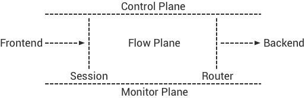
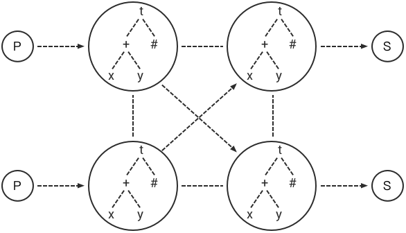
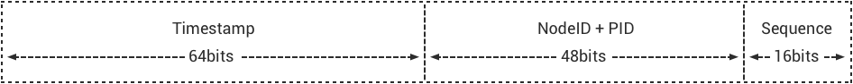
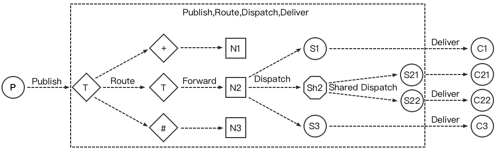
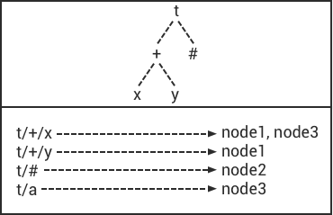
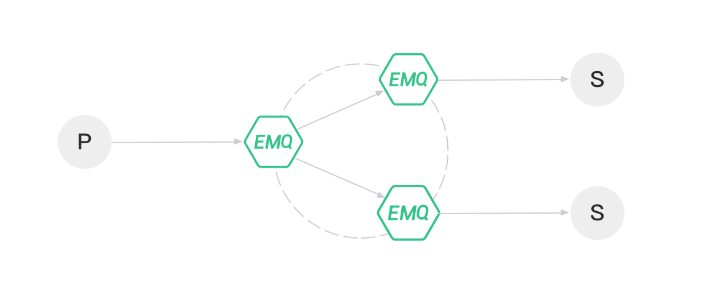

架构设计
前言
EMQ X 在设计上，首先分离了前端协议 (FrontEnd) 与后端集成 (Backend)，其次分离了消息路由平面 (Flow Plane) 与监控管理平面 (Monitor/Control Plane):

100 万连接
多核服务器和现代操作系统内核层面，可以很轻松支持 100 万 TCP 连接，核心问题是应用层面如何处理业务瓶颈。
EMQ X 在业务和应用层面，解决了单节点承载100万连接的各类瓶颈问题。连接测试的操作系统内核、TCP 协议栈、Erlang 虚拟机参数参见: http://docs.emqtt.cn/zh_CN/latest/tune.html。
全异步架构
EMQ X 是基于 Erlang/OTP 平台的全异步的架构：异步 TCP 连接处理、异步主题 (Topic) 订阅、异步消息发布。只有在资源负载限制部分采用同步设计，比如 TCP 连接创建和 Mnesia 数据库事务执行。
EMQ X 3.0 版本中，一条 MQTT 消息从发布者 (Publisher) 到订阅者 (Subscriber)，在 EMQ X Broker 内部异步流过一系列 Erlang 进程 Mailbox:
消息持久化
EMQ X 开源产品不支持服务器内部消息持久化，这是一个架构设计选择。首先，EMQ X 解决的核心问题是连接与路由；其次，我们认为内置持久化是个错误设计。
传统内置消息持久化的 MQ 服务器，比如广泛使用的 JMS 服务器 ActiveMQ，几乎每个大版本都在重新设计持久化部分。内置消息持久化在设计上有两个问题:
- 如何权衡内存与磁盘的使用？消息路由是基于内存的，而消息存储是基于磁盘的。
- 多服务器分布集群架构下，如何放置 Queue 如何复制 Queue 的消息？
Kafka 在上述问题上，做出了正确的设计：一个完全基于磁盘分布式 Commit Log 的消息服务器。
EMQ X 在设计上分离消息路由与消息存储职责后，数据复制容灾备份甚至应用集成，可以在数据层面灵活实现。
EMQ X 企业版产品中，可以通过规则引擎或插件的方式，持久化消息到 Redis、MongoDB、Cassandra、MySQL、PostgreSQL 等数据库，以及 RabbitMQ、Kafka 等消息队列。
系统架构
概念模型
EMQ X 概念上更像一台网络路由器 (Router) 或交换机 (Switch)，而不是传统的企业级消息队列 (MQ)。相比网络路由器按 IP 地址或 MPLS 标签路由报文，EMQ X 按主题树 (Topic Trie) 发布订阅模式在集群节点间路由 MQTT 消息:

设计原则
- EMQ X 核心解决的问题：处理海量的并发 MQTT 连接与路由消息。
- 充分利用 Erlang/OTP 平台软实时、低延时、高并发、分布容错的优势。
- 连接 (Connection)、会话 (Session)、路由 (Router)、集群 (Cluster) 分层。
- 消息路由平面 (Flow Plane) 与控制管理平面 (Control Plane) 分离。
- 支持后端数据库或 NoSQL 实现数据持久化、容灾备份与应用集成。
系统分层
- 连接层 (Connection Layer)：负责 TCP 连接处理、 MQTT 协议编解码。
- 会话层 (Session Layer)：处理 MQTT 协议发布订阅消息交互流程。
- 路由层 (Route Layer)：节点内路由派发 MQTT 消息。
- 分布层 (Distributed Layer)：分布节点间路由 MQTT 消息。
- 认证与访问控制 (ACL)：连接层支持可扩展的认证与访问控制模块。
- 钩子 (Hooks) 与插件 (Plugins)：系统每层提供可扩展的钩子，支持插件方式扩展服务器。
连接层设计
连接层处理服务端 Socket 连接与 MQTT 协议编解码：
- 基于 eSockd 框架的异步 TCP 服务端
- TCP Acceptor 池与异步 TCP Accept
- TCP/SSL, WebSocket/SSL 连接支持
- 最大并发连接数限制
- 基于 IP 地址 (CIDR) 访问控制
- 基于 Leaky Bucket 的流控
- MQTT 协议编解码
- MQTT 协议心跳检测
- MQTT 协议报文处理
会话层设计
会话层处理 MQTT 协议发布订阅 (Publish/Subscribe) 业务交互流程：
- 缓存 MQTT 客户端的全部订阅 (Subscription)，并终结订阅 QoS
- 处理 QoS 0/1/2 消息接收与下发，消息超时重传与离线消息保存
- 飞行窗口 (Inflight Window)，下发消息吞吐控制与顺序保证
- 保存服务器发送到客户端的，已发送未确认的 QoS 1/2 消息
- 缓存客户端发送到服务端，未接收到 PUBREL 的 QoS 2 消息
- 客户端离线时，保存持久会话的离线 QoS 1/2 消息
报文 ID 与消息 ID
MQTT 协议定义了一个 16bits 的报文 ID (PacketId)，用于客户端到服务器的报文收发与确认。MQTT 发布报文 (PUBLISH) 进入 Broker 后，转换为一个消息对象并分配 128bits 消息 ID (MessageId)。
全局唯一时间序列消息 ID 结构:

- 64bits 时间戳: erlang:system_time if Erlang >= R18, otherwise os:timestamp
- Erlang 节点 ID: 编码为2字节
- Erlang 进程 PID: 编码为4字节
- 进程内部序列号: 2字节的进程内部序列号
端到端消息发布订阅 (Pub/Sub) 过程中，发布报文 ID 与报文 QoS 终结在会话层，由唯一 ID 标识的 MQTT 消息对象在节点间路由:
路由层设计
路由层维护订阅者 (Subscriber) 与订阅关系表 (Subscription)，并在本节点发布订阅模式派发 (Dispatch) 消息:

消息派发到会话 (Session) 后，由会话负责按不同 QoS 送达消息。
分布层设计
分布层维护全局主题树 (Topic Trie) 与路由表 (Route Table)。主题树由通配主题构成，路由表映射主题到节点:

分布层通过匹配主题树 (Topic Trie) 和查找路由表 (Route Table)，在集群的节点间转发路由 MQTT 消息:

Mnesia/ETS 表设计
| Table | Type | Description |
|---|---|---|
| emqx_conn | ets | 连接表 |
| emqx_metrics | ets | 统计表 |
| emqx_session | ets | 会话表 |
| emqx_hooks | ets | 钩子表 |
| emqx_subscriber | ets | 订阅者表 |
| emqx_subscription | ets | 订阅表 |
| emqx_admin | mnesia | Dashboard 用户表 |
| emqx_retainer | mnesia | Retained 消息表 |
| emqx_shared_subscription | mnesia | 共享订阅表 |
| emqx_session_registry | mnesia | 全局会话注册表 |
| emqx_alarm_history | mnesia | 告警历史表 |
| emqx_alarm | mnesia | 告警表 |
| emqx_banned | mnesia | 禁止登陆表 |
| emqx_route | mnesia | 路由表 |
| emqx_trie | mnesia | Trie 表 |
| emqx_trie_node | mnesia | Trie Node 表 |
| mqtt_app | mnesia | App 表 |
Erlang 设计相关
- 使用 Pool, Pool, Pool... 推荐 GProc 库: https://github.com/uwiger/gproc
- 异步，异步，异步消息...连接层到路由层异步消息，同步请求用于负载保护
- 避免进程 Mailbox 累积消息
- 消息流经的 Socket 连接、会话进程必须 Hibernate，主动回收 binary 句柄
- 多使用 Binary 数据，避免进程间内存复制
- 使用 ETS, ETS, ETS... Message Passing vs. ETS
- 避免 ETS 表非键值字段 select, match
- 避免大量数据 ETS 读写, 每次 ETS 读写会复制内存，可使用 lookup_element, update_counter
- 适当开启 ETS 表 {write_concurrency, true}
- 保护 Mnesia 数据库事务，尽量减少事务数量，避免事务过载(overload)
- 避免对 Mnesia 数据表非索引、或非键值字段 match, select